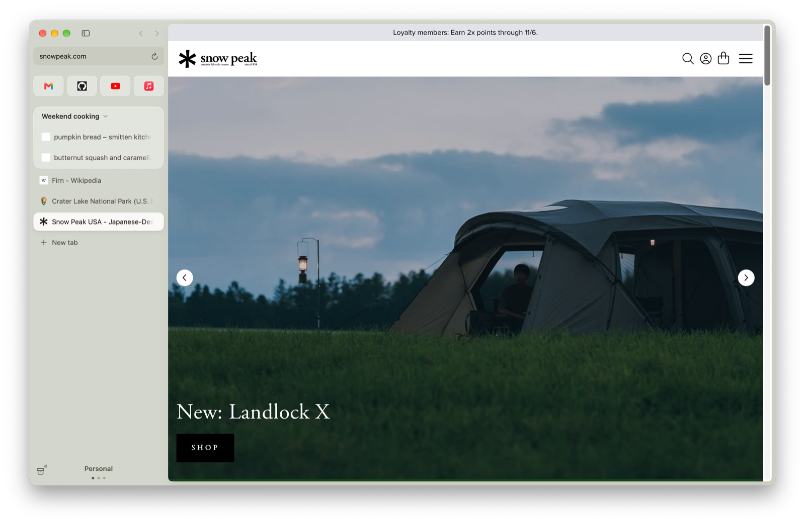

Settled snow, and why it squeaks
Fresh snow is mostly air. A flake falls as a lacy six-armed crystal, and a new layer of them on a still night can be nine parts empty space to one part ice. That is why a morning after a storm feels so quiet: all that air between the crystals swallows sound the way a heavy curtain does. Walk out onto it and your boots sink in to the shin with almost no noise at all.
Within hours, the crystals begin to change. Their fine arms are thin and have a lot of surface for the little ice they hold, and ice, like a soap bubble, is always trying to have less surface. Water molecules slowly leave the sharp tips and settle in the hollows, so each flake rounds off into a small grain. Snow scientists call this destructive metamorphism, which sounds dramatic for something so gentle.
Next is a picture with a caption. It should show, rounded at the corners, at the column's width.

As the grains round, they also start to touch. Where two grains meet, water molecules gather in the narrow neck between them, and the neck slowly thickens into a bond. Over days, the loose pile of rounded grains becomes a connected lattice, a little like a sponge made of ice. The layer gets denser and stronger, and the air between the grains is squeezed out bit by bit.
This sentence has a link to example.com; it should be underlined in the space's color, open in this tab when clicked, and open in a new tab from its right-click menu. This one is written as a script link, and this one as a data link: both should read as plain text, with no underline.
This paragraph asked to be huge and red. In Reader it should be ordinary text, the same size and color as the rest.
After the frame, the form, the drawing, and the embedded object above, this paragraph should follow straight on, with no gap or leftover pieces. If you read words in capitals about a form or an SVG, something came along that shouldn't have.
Snow that has survived a whole summer without melting is no longer just snow. Mountaineers call it firn, and it is the halfway point between a snowfall and a glacier.
Firn is old, dense, granular snow, usually at least a year old, packed to more than half the density of solid ice. On a high alpine slope it can be walked on in the early morning without sinking, and it has a coarse, sugary feel underfoot. Push deeper, and each year's firn is pressed harder by the layers above it, until the connected air channels between the grains pinch off into separate bubbles. At that point the firn has become glacier ice.
Why cold snow squeaks
On a very cold morning, packed snow squeaks under your boots. The sound comes from the grains themselves: below about minus ten degrees Celsius, the ice is too cold for your weight to melt a thin slippery film at the contact points, so the bonds between grains snap instead of sliding. Thousands of tiny snaps together make the squeak. On a mild day, the same snow just crunches softly, or packs down without a sound.
A few things change how loud it is:
- How cold the air is, since colder snow has stronger, more brittle bonds.
- How long the snow has settled, since older snow has more bonds to break.
- What is on your feet, since a hard sole snaps more bonds at once than a soft one.
Snow researchers often write small programs to model all this. A bond's strength might be estimated like so, which should appear in a soft box in a fixed-width font:
strength = neck_area * ice_strength(temperature)
if load > strength:
squeak()And here are a few rough densities, which should appear as a quiet table:
| Kind | Density |
|---|---|
| Fresh snow | 50 to 100 |
| Settled snow | 200 to 300 |
| Firn | 400 to 830 |
| Glacier ice | 830 to 917 |
So the next time you hear snow squeak on the way to the car, you are hearing ice bonds break, thousands at a time, in snow that has spent the night quietly turning itself into something a little more like a glacier. It is a small reminder that even a still, white morning is busy underneath.
That is the end of the article. Below it, the page has a footer and a comment box, which Reader should leave out.